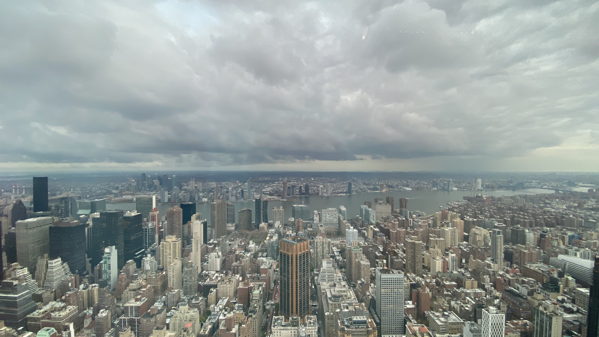

Hola! Me llamo Tomas, soy de Argentina y me encanta hablar e investigar sobre viajes. Al terminar el secundario
me sumergí profundamente en el mundo del turismo y de la aviación, ya que también tengo un gran amor por los
aviones. Comencé estudiando para ser Tripulante de Cabina de Pasajeros, más conocido coloquialmente como
azafato, y posteriormente comencé la carrera de Turismo y Hotelería en la Universidad.
Sueño con vivir viajando, poder trabajar desde cualquier parte del mundo, atreviéndome a vivir experiencias y
aventuras únicas, aplicando todo lo que se y lo que iré aprendiendo a lo largo de los años.
Poder aprender sobre destinos, culturas, tradiciones, experimentar vivencias y poder plasmarlas en algún lugar
fue lo que siempre quise, y por eso cree este blog, para poder ayudar a otros a descubrir lo bello de viajar y
todo lo que el mundo tiene para ofrecernos.
Además, esta es una forma de que todo lo aprendido quede para siempre en algún lugar, y no se pierda solo en mi
memoria.
Sobre Mi
